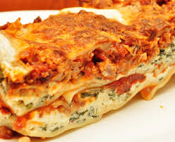

Lasagna

Description
One of the most loved foods in the world is finally here. This is a beautiful Italian Lasagna with layers of slow cooked Ragu Bolognese and Besciamella cheese sauce.
As a child and even now I always melt on the inside when I hear my mom is making Lasagna.
Ingredients
The Meat Sauce
- Onion, Garlc, Carrot, Celery
- Mince
- Red Wine (extra flavour)
- Seasoning of Choice
The White Sauce
For Assembling
Directions
- Heat oil in a large heavy based pot over medium heat. Add garlic, onion, celery and carrots. Cook for 10 minutes until softened and sweet – they should not brown (if they do, turn heat down).
- Add beef, turn heat up and cook the beef, breaking it up as you go.
- Once the beef has all turned brown, add the remaining Ragu ingredients
- Stir then adjust the heat so it is bubbling very gently. Place the lid on and cook for 1.5 – 2 hours, stirring every now and then, then remove the lid and simmer for 30 minutes.
- The ragu is ready when the meat is really tender and the sauce has thickened and is rich
Home Page